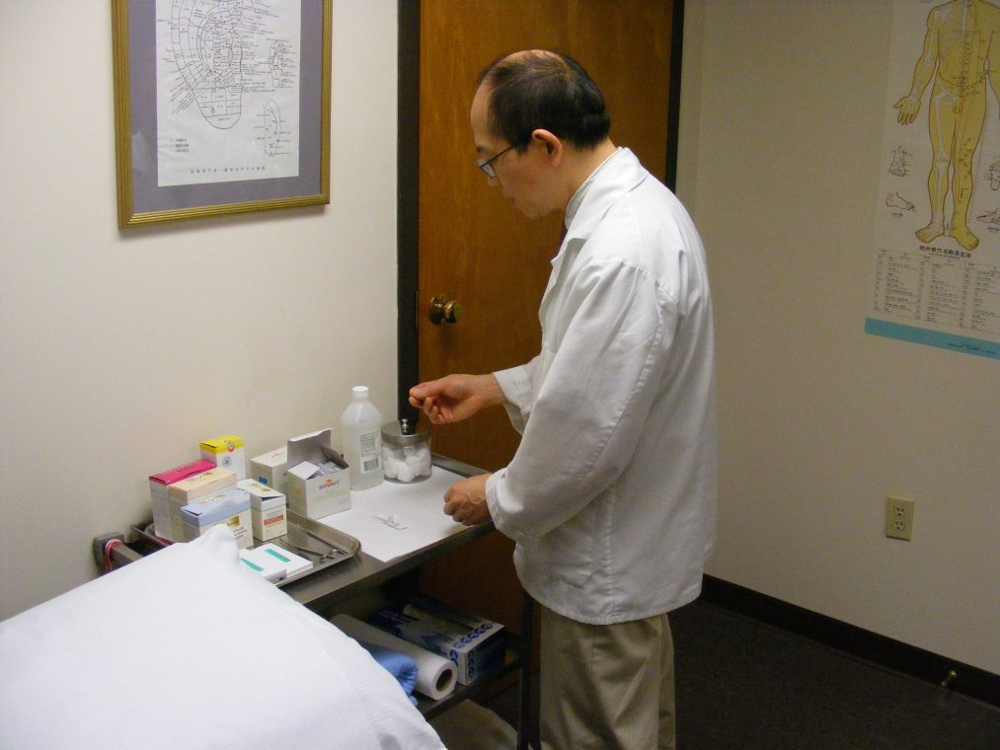
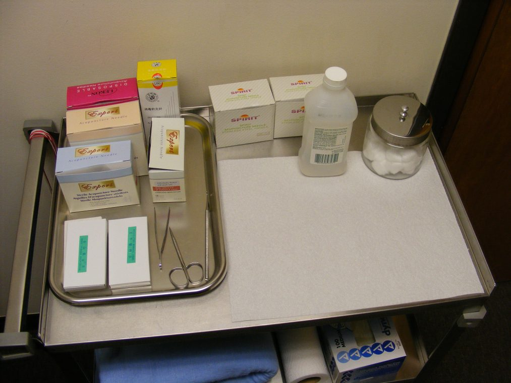
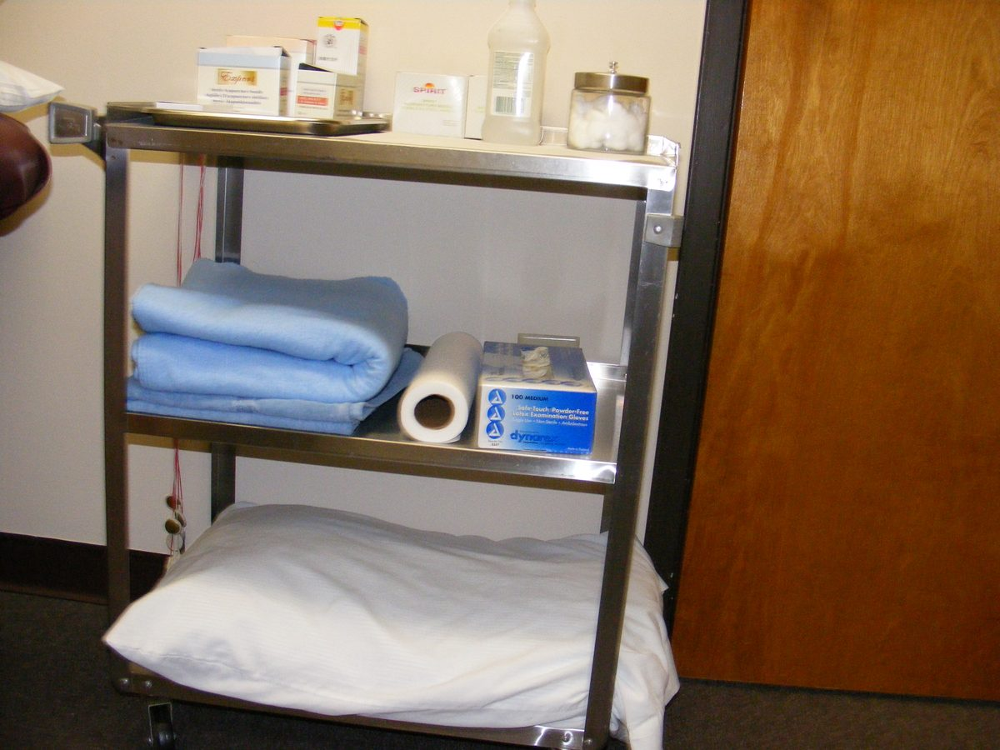

No two people are alike. Below is a general guide to how Chinese medicine works and what your visit will be like.
Acupuncture and herbal medicine comprise a comprehensive health care system. This system was developed in China and has a history of over 2,500 years.
Chinese medicine is very different from western medicine. The western physician starts with a symptom, then searches for the underlying mechanism, a precise cause for a specific disease. The treatment is focused on that particular disease.
By contrast, the Chinese physician directs his or her attention to the complete physiological and psychological individual. All relevant information, including the symptom as well as the patient's other general characteristics, are gathered and woven together until it forms what Chinese medicine calls a "pattern of disease." Instead of focusing on treating a specific disease, Chinese medicine manages to balance the whole body system to treat the problem.
Acupuncture is based on Chinese theories of the flow of Qi (energy) and blood through a channel pathway which is similar to, but not identical to, the nervous and blood circulatory systems. Diseases develop when there is a disruption of the harmonious flow of Qi and blood. Acupuncture can regulate the energy flow and restore the harmonious energetic balance of the body.
Recent studies have shown that acupuncture can increase numerous naturally occurring substances in the body that facilitate healing. For instance, acupuncture can stimulate the release of neurotransmitters such as endorphin and enkephalin, which block pain sensory pathways to eliminate pain, elevate mood, and create deep relaxation. Some evidence also indicates that acupuncture can regulate blood circulation and improve the immune resistance level in the body.
Treatment involves the insertion of very thin needles into specific points on the body. The needles are sterile and disposable. Treatments last thirty to sixty minutes.
Hands-on techniques from the same Chinese medical tradition. Acumassage may be used alongside acupuncture when indicated for your condition.
Authentic Chinese herbal medicine, used in conjunction with treatment when indicated. Dietary, lifestyle habits, and exercise are also discussed during treatment.
Your initial visit will be a meeting in the office with the doctor to discuss your medical issues. He will need your medical history, along with any allergies, current conditions, and medicines. Your information is safe — the practice follows all HIPAA requirements.
He may take your pulse (there are 18 in the Chinese system, so be calm and let him have each wrist) and may ask you to stick out your tongue — yes, it is a diagnostic for many medical conditions. He will then explain what his recommended course of treatment will be.
Each of the two treatment rooms is quiet, comfortable, and absolutely sterile, with a treatment table covered in sterile paper, infrared heat lamps, and a TENS machine.
You will be asked to remove some clothing and given privacy while doing so. Treatment consists of the insertion of a number of needles at specific spots on the body, all depending on the condition being treated. Needles do not hurt — the locations where the needles go usually have no feeling during insertion.
Depending on the condition, a TENS lead may be attached to the needle. TENS uses an electrical pulse to stimulate the connection to the body; in acupuncture, the needle is energized and a slight electrical pulse is felt. The doctor will begin with low voltage stimulation and ask what you feel as he increases the power. Not all patients will receive TENS.
The lights will be turned off during treatment and you may nap or listen to the soft music. A treatment lasts 30 minutes or so. All needles are removed and disposed of in a sharps container — needles are never reused.
Afterwards you may feel refreshed and active, or you may feel tired. Now is the time to go home and relax so the treatment can take effect. Rest, sleep, or read in a warm quiet place; a couple of hours of rest helps.
Generally one to six treatments for acute conditions, and five to twenty treatments for chronic disorders. Each person is different and each treatment plan will vary, but usually about 6 treatments are needed for effects to show. Your doctor will discuss how soon you should return and how many treatments to expect.


